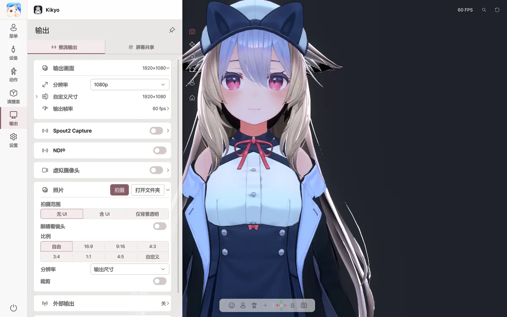
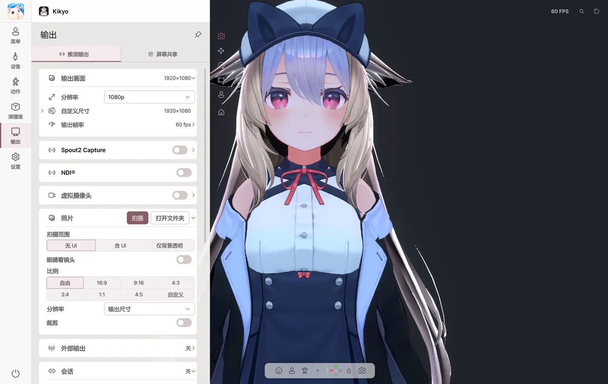
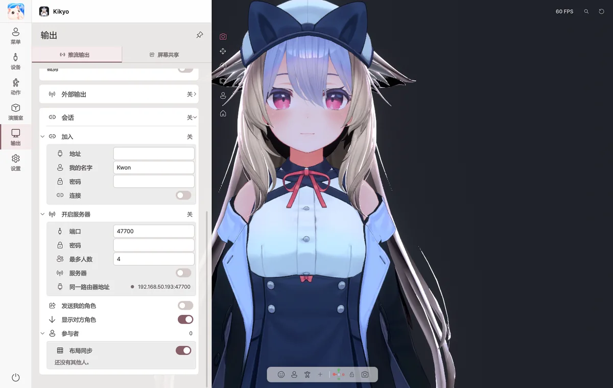
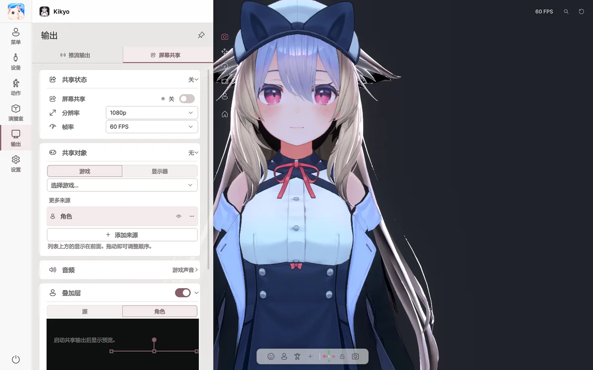
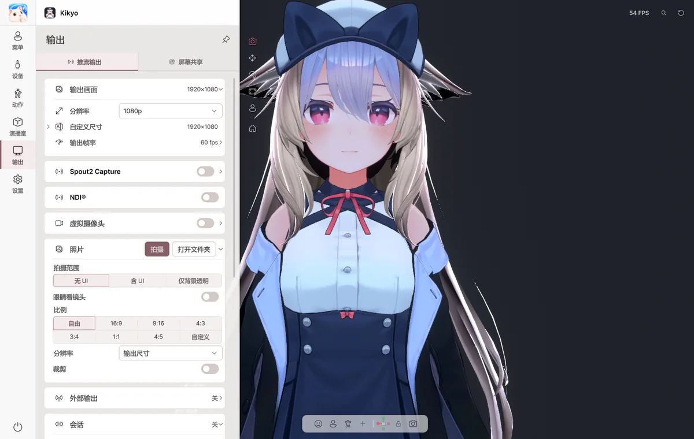
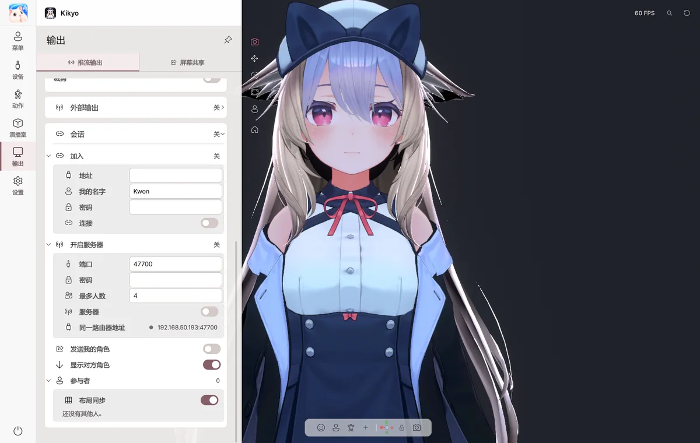

输出
即使选择了工作室摄像机进行直播，Avatar Live 主窗口仍是供编辑的场景视图。观众在 OBS 中看到的是选中直播摄像机的画面，并不是设置面板。若要透明背景，通常优先使用 Spout2 或 NDI，而非普通窗口捕获。

| 目标 | 使用方式 | 版本 |
|---|---|---|
| 发送透明角色到同一台 PC的 OBS | Spout2 | Basic / Pro |
| 发送角色到局域网内另一台 PC的 OBS | NDI® | Basic / Pro |
| 让 Discord/Zoom 把角色识别为摄像头 | 虚拟摄像机 | Basic / Pro |
| 在 Discord 中把游戏与角色合成直播 | 屏幕共享 | Basic，部分额外来源为 Pro |
| 多台工作室摄像机分别发送到 OBS | 每摄像机独立 Spout2 | Pro，最多三路额外输出 |
| 与远端参与者同步角色、动作和表情 | 远程会话 | Pro |
| 将输出录制成 MP4 | 录制 | Pro |
输出分辨率与帧率
- 分辨率决定 OBS、NDI、Spout2 接收到的视频像素数。720p 占用较少资源但边缘较粗糙；1080p 适合普通直播；1440p/4K 细节更清晰，但 GPU、网络负载较高。Basic 最高 1920×1080，Pro 最高 3840×2160。
- FPS是每秒送出的画面数。30fps 更省资源，但手指、面部和镜头动作较不连贯；60fps 更流畅。输出上限 60fps，若程序本身渲染速度不足，输出也会降低。
- 直播摄像机决定外部 OBS 看到什么。若输出场景视图，你转动编辑镜头也会改变观众画面。选择工作室摄像机 (Pro)可在编辑时维持固定直播构图。
- 透明背景需要在工作室中选择“透明”，同时让接收端启用 Alpha 合成。普通窗口捕获或虚拟摄像机不会以完全相同的方式传递透明通道。
Spout2 → 同一台 Windows PC 的 OBS

Avatar Live 提供 Spout2 发送功能，但OBS 需要另外安装 Spout2 接收插件。
- 完全退出 OBS。从 Off World Live 的官方 OBS Spout2 Releases下载安装程序，并参考项目安装说明。确认安装到正在使用的 OBS。
- 重新启动 OBS，在来源 → +中寻找 Spout2 Capture。没有此选项时，请检查插件与 OBS 的版本兼容性、安装目录，然后重新启动。
- 在 Avatar Live 输出 → 直播 → Spout2中打开开关。默认发送名称是 Avatar Live，若修改名称则点应用。
- 在 OBS 的 Spout2 Capture 来源设置中选择 Avatar Live（或修改后的发送名称），然后调整画面位置和比例。
- 若要背景透明，请在 Avatar Live 的工作室 → 背景选择透明，并在 OBS 插件中启用类似 Composite with alpha 的透明合成设置。应在 OBS 最终画面中确认结果。
发送名称更改后，OBS 中也必须重新选新名称。发送 Alpha通常应保持开启。Spout2 主要用于同一台 Windows PC 的两个应用；跨电脑连接请使用 NDI。若画面卡顿，可降低分辨率/FPS 并减少不必要的摄像机。
每摄像机独立 Spout2 (Pro)允许将最多 三路其他摄像机的画面分别提供给 OBS，每路单独占用渲染资源，开启过多可能增加 GPU 负担。
第三方插件声明： OBS Spout2 插件由 Off World Live 独立提供，并不随 Avatar Live 分发。其许可与安装条件以项目官方说明（GPL v2）为准。
NDI® → OBS 或另一台 PC（Basic 可用）

NDI® 输出同时支持 Basic 与 Pro。它利用网络传输画面，适合让另一台计算机的 OBS 或 Studio Monitor 收到角色。请确保发送与接收设备可以互相访问；访客 Wi-Fi 的设备隔离可能阻止自动发现。
- 在 Avatar Live 的输出 → 直播 → NDI®打开开关。默认 NDI 发送名称是 Avatar Live，发送分辨率与 FPS 跟随输出画面设置。
- 关闭 OBS，前往 DistroAV（原 OBS-NDI）官方 Releases安装 OBS 插件，并根据其要求安装 NDI Runtime。旧版 OBS-NDI 与新 DistroAV 同时存在时可能冲突，请按官方说明卸载旧插件。
- 在 OBS 中选择来源 → + → NDI Source（不同版本名称可能不同），再选 Avatar Live 作为来源。
- 如果收不到信号，依次检查 NDI 开关、Windows 防火墙、两台电脑是否可以互相通信、插件及 Runtime 版本。要合成透明角色，还需要接收端支持 Alpha。
- 如果不想先安装 OBS 插件，可到 NDI Tools 官方页面安装 Studio Monitor 直接查看发送源。NDI Tools 不包含在 Avatar Live 中。
NDI 商标、SDK 与第三方软件许可
- NDI® 是 Vizrt NDI AB 的注册商标。 官方信息请参阅 ndi.video。Avatar Live 并非 NDI 官方或获其背书的产品。
- Avatar Live 的发行包按 NDI SDK 6.3.2 可再分发运行库及相应 Processing.NDI.Lib.Licenses.txt 许可证文件组织。NDI SDK 的使用及再分发受官方 SDK 许可条款和发行包随附全文约束。
- NDI SDK、NDI Tools、DistroAV属于不同的软件与许可。允许在应用中包含 SDK 运行库并不等于允许重新分发 NDI Tools。请从各自官方网站安装接收程序。
- NDI 本身是网络视频输出功能，并不等同于下文远程会话的端到端加密。在不可信的公用网络发送画面时应格外谨慎。
虚拟摄像机与照片
使用程序中的安装虚拟摄像机，会向 Windows 注册 Avatar Live Camera，随后可在 Discord、Zoom、OBS 的摄像头设备列表中选择。安装可能需要 Windows 管理员权限。若按钮没有反应，可重新启动程序并查看程序目录下的 VirtualCamera/Install.bat。开启虚拟摄像机输出后，若 Discord 无法发现设备，尝试完全关闭并重新打开 Discord。
虚拟摄像机最高为 1920×1080 / 30fps，不提供透明 Alpha。照片以 PNG 格式保存，裁剪、宽高比及分辨率改变保存范围与像素数量，背景透明时可保存透明 PNG。
Discord 屏幕共享与 VB-CABLE

- 在输出 → 屏幕共享选择游戏或显示器，如果选择游戏，请从程序列表挑选要捕获的窗口。
- 调整角色覆盖层的位置和尺寸，打开屏幕共享。
- 在 Discord 屏幕共享 → 应用程序中选择 Avatar Live Share Output，视需要允许共享音频；不要选择普通 Avatar Live 设置窗口。
- 如果捕获是黑屏，尝试把游戏改为无边框窗口模式。若程序回退为捕获整个显示器，该显示器上的其他窗口也可能被观众看到，请检查隐私信息。
额外来源 (Pro)允许叠加更多窗口或显示器，堆叠顺序影响遮挡。声音可以选择游戏声音、桌面声音、指定应用、静音。每个应用的音量 0–200%仅改变共享的声音混合，不改变 Windows 正常播放音量。0 为静音、100% 为原始、200% 为放大且可能失真。
如果缺少独立的共享音频设备，程序可能提示安装 VB-Audio VB-CABLE，需要用户同意和 Windows 管理员批准。官方产品：VB-Audio。安装后确认耳机仍是 Windows 的默认播放设备。
VB-CABLE 授权声明： VB-CABLE 是 VB-Audio Software 的 Donationware（捐赠软件）。使用者应阅读官方分发与许可政策，按其要求捐赠或支付对应许可费用。Avatar Live 不代替第三方授予使用许可。
远程会话 (Pro)：连接其他电脑上的参与者

远程会话由一名参与者的 PC 在应用内运行房间服务器，不是把虚拟形象上传并长期保存到 Avatar Live 的云端。它共享的是动作、手指、表情、视线、参与者状态以及经额外同意的角色数据，每个电脑独立渲染场景中的人物，而不是传输直播画面。
房主创建房间
- 房主展开输出 → 直播 → 会话 → 开启服务器。
- 端口默认 47700，最多人数默认 4（包含房主，可设置为 2–16），设置足够复杂的密码。
- 打开服务器开关，房主的电脑会运行服务器且房主加入房间。把界面显示的内网地址告诉同一台路由器下的好友，例如 192.168.0.25:47700（仅示例）。
- 好友在输出 → 直播 → 会话 → 加入填写地址、我的名字、密码，然后打开连接开关。
- 退出时关闭连接；房主关闭服务器后，整个房间的其他人也会断开。
接收角色、布局与动作

- 接收其他角色打开后，可在自己的场景中显示别人。如果没有相同模型、或对方未允许发送角色数据，可选择本机拥有的替代角色，继续接收可以应用的实时动作。
- 发送我的角色数据默认关闭。打开前需要明确同意传输及会话临时存储，并确认模型、衣服、贴图和道具的使用条款允许这种传输。禁止再分发的 VRM不会被发送。
- 布局同步（默认开）把房主安排的位置＋每人单独移动的偏移结合起来。关掉则使用自己的本地布局。你对远程角色进行位置、旋转、缩放调整，并不必然让其他人画面里的角色跟着改变。
- 锁定位置（房主）可限制参与者修改自己的位置、方向及大小，适合拍合照。
- 看向参与者／看向摄像机发送的是目标意图，各电脑会在自己的场景中找到对应参与者的脸或自己摄像机的位置并重新计算视线，因此不同布局也可自然对视。
- 若自己已经合法持有与对方相同的 VRM，把它放在角色库的 Vrm 文件夹并选择重新查找。禁止再分发或未获许可的模型应使用替代角色。
会话数据、加密、临时缓存和资产使用条款
没有集中存储角色原始资料的 Avatar Live 云服务器。会话通过房主 PC 进行连接与转发；但房主 PC 和接收 PC 在会话期间可能保留加密临时缓存。这是临时存储，不应该被描述成“所有设备都完全不落盘”。
- 经明确同意的角色数据以 AES-256-GCM 按分块加密传输，接收方在会话专用临时缓存中存储密文与认证标签。房主为了转发给后来加入的人，也可能保有密文缓存。程序不会把这个缓存作为可导出的普通模型素材提供。
- 设计会在退出、关闭共享、结束会话时丢弃密钥并尝试清除临时缓存，异常结束后的残留目录会在下次启动时重新清理。这不等于保证物理彻底擦除磁盘数据，也不能绝对阻止具有操作系统管理权限的人复制已经加密的字节。
- 实时姿态、表情和控制消息通过独立的 TCP/UDP 路径传输。代码并不能确认这一路径也使用角色数据分块所用的 AES-GCM 端到端加密。不能把整个会话理解为所有数据都加密，应选择可信网络并谨慎处理敏感内容。
- 房间密码通过 HMAC-SHA256 挑战应答检查，不直接发送明文密码，但这不意味着所有通信都自动经过 TLS 加密。
- 角色、衣服、贴图和道具的版权与授权条件属于原作者。会话临时共享、加密以及退出时删除，并不会取消禁止再分发、禁止商用等条款。请事先确认每件资产的授权，不要试图提取或传播其他参与者的原始模型。
- 两台真实 PC 之间的会话连接已进行过验证。具体连接结果仍可能受到路由器、CGNAT、Windows 安全设置以及各自是否拥有模型的影响。
遇到问题时
- OBS 没有 Spout2 Capture：确认已安装对应 OBS 插件、版本匹配，并完全重启 OBS。
- OBS 没有 NDI Source：确认 DistroAV、必要的 NDI Runtime，以及旧 OBS-NDI 不冲突。
- 找不到 NDI：检查双方网络、防火墙、NDI 输出开关，可使用 NDI Studio Monitor 测试。
- 只能局域网加入会话：检查 TCP/UDP 两种端口转发、房主内网地址变化和 WAN/CGNAT。
- 远程人物只是替代角色：检查双方的发送/接收同意、VRM 再分发许可、本地是否拥有该模型。
- 直播太卡：降低输出 FPS/分辨率、减少独立摄像机、调整灯光特效或网络负载。
无法连接时：端口转发和防火墙
- 在房主电脑的 Windows 网络设置里找出IPv4 地址，例如 192.168.0.25。可以在路由器里设置DHCP 地址保留，避免重启后 IP 改变。
- 登录路由器管理页，找到端口转发／虚拟服务器。添加规则，把外部 TCP 47700 与 UDP 47700转发到房主的内网 IPv4、内部端口 47700。某些路由器需要分别添加 TCP 和 UDP 两条规则。如果 App 使用自定义端口，所有位置都应改为同一个端口。
- 在 Windows 安全中心的防火墙 → 允许应用通过防火墙中允许 Avatar Live。必要时仅为房主 PC 的 TCP/UDP 47700建立入站规则。不要关闭整个防火墙，也不要开放所有端口。
- 查看路由器的 WAN/Internet IP。如果是 10.x、172.16–31.x、192.168.x或 100.64–127.x，可能存在上级路由器或 CGNAT，仅在自己的路由器上转发也无法被互联网直接访问。此时需要上级路由器设置或咨询运营商获取公网 IP。
- 将真正的公网IP:47700发给好友。203.0.113.10:47700 只是文档专用示例，不能用于实际连接。请从另一条外网连接测试；同一 Wi-Fi 内使用公网地址测试可能因路由器不支持 NAT 回环而失败。
- 结束后关掉服务器，不再需要时删除临时端口转发规则。不要将房间密码公开贴到互联网。
连接失败排查： 服务器已开 → 双方版本一致（）→ 地址和密码 → 同一局域网是否正常 → Windows 防火墙 → TCP 和 UDP 端口转发 → WAN/CGNAT → 真正的外网连接测试。